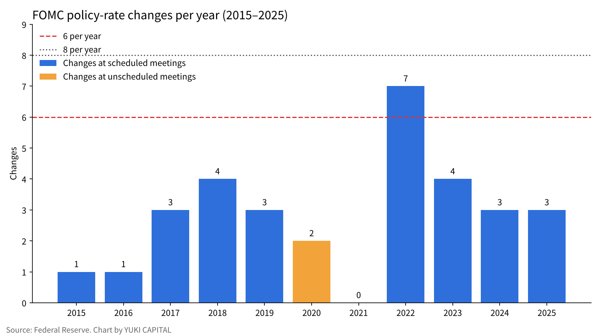
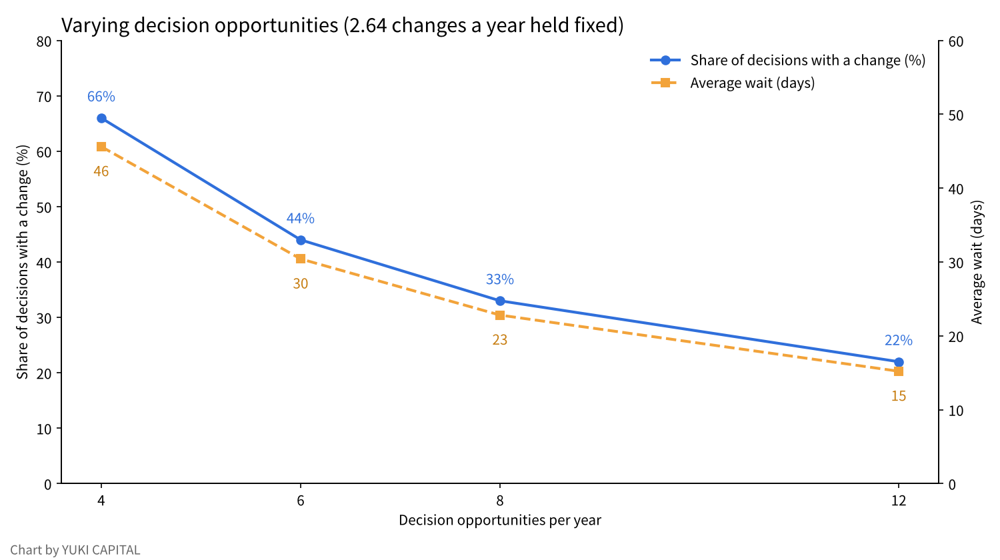

How many times a year should a central bank set interest rates? The FOMC's "six a year" against how often rates actually moved
At a press conference on October 28, 2026, Fed Chair Warsh signaled that the FOMC will reduce its rate-setting opportunities from 2027. One of the eight meetings a year would go to strategy discussion, and in 2028 decisions may fall to six a year.
This article asks a single question: compared with how often rates actually moved over the past 11 years, are six decision opportunities a year enough?
Writing from Japan, I test it with published material from the Fed, the Bank of Japan, the ECB, the UK, Australia and Canada, two studies, and a sensitivity analysis that moves the number of meetings from 4 to 12.

Question and background
A monetary policy meeting is the scheduled meeting at which a central bank sets the level of its policy rate. In the US this is the FOMC (Federal Open Market Committee), and the policy rate is expressed as a target range for the federal funds rate.
According to press reports, Chair Warsh proposed at the July 2026 meeting a move to six meetings a year, roughly every two months. The stated reasons were to secure "time for the information used in decisions to accumulate" and "time to think about strategy" [1][2]. At the October 28 press conference he said that in 2027 one meeting would not set rates, and that in 2028 there may be only six decisions [1]. In August, seven senators objected in a letter, arguing that the FOMC has held at least eight scheduled meetings a year since 1981 [3].
The US is not the first to cut meetings. The Bank of Japan went from 14 to 8 a year from 2016 [4][5], and the ECB went from monthly to every six weeks from 2015 [6]. The Bank of England (BoE) cut from 12 to 8 from September 2016 [7], and the Reserve Bank of Australia (RBA) from 11 to 8 from 2024 [8]. The Bank of Canada has used eight fixed dates a year since 2000 [9].
What stands out is that the person who recommended the BoE's cut was Warsh himself. In his 2014 review for the BoE, he judged a roughly four-week frequency to be suboptimal. Policy works with long lags, four weeks rarely bring enough data to change the outlook, monthly meetings raise market expectations more than needed, and preparation takes up staff time [10].

Data and method
I counted rate changes for the 11 years from 2015 to 2025 from the Fed's published list of target changes [11]. The period had 88 scheduled meetings, and rates changed at 29 of them. The two changes in March 2020 came at unscheduled meetings held between scheduled ones, and are not included in the 29.
I counted scheduled meetings only because the debate over the number of meetings concerns scheduled meetings. Unscheduled meetings can be held in any country regardless of the number of scheduled ones.
For comparison I also counted the Bank of Japan. Of 80 meetings from 2016 to 2025, it changed its short-term policy rate at 5 [12]. The BoJ raised rates again in June and September 2026, and the September decision put the policy rate at around 1.25% [12].
From 2016 to 2024 the BoJ spent long periods under negative rates and yield curve control (a framework that steers both short and long rates), and it often adjusted purchase amounts or operating ranges without changing the rate level. For that reason I show the BoJ figures for reference, not for a simple comparison with the Fed.
The analysis uses two measures. The first is how many years needed more rate changes than there were decision opportunities. The second is the share of decision opportunities with a change. The formula is as follows.
Share of decisions with a change = average changes per year ÷ decision opportunities per year
In 2026, through the end of October, rates changed at one of seven scheduled meetings, a 0.25% hike in September [11]. Changes at scheduled meetings totaled 29 over 11 years, an average of about 2.64 a year. I assume the number of changes needed each year does not change with the number of meetings.
I also show the average wait from a shock to the next decision opportunity. If opportunities are evenly spaced, the average wait is roughly 365 ÷ (2 × decision opportunities per year).
Results
The number of FOMC rate changes varies widely by year. It was 0 in 2021 and 7 in 2022. In 11 years, 2022 was the only year with more than six changes.

Looking back over 11 years with six decision opportunities a year, 2022 is the only year that would have fallen short. Even then, larger steps per decision would make it arithmetically possible to fit the same total hikes into six opportunities. In 2022 there were in fact four hikes of 0.75% [11].
The BoJ changed its short-term rate at 5 of 80 meetings, about 6%. It made no change from 2017 to 2023, so most of its eight meetings a year were occasions to hold. In 2026, by contrast, it changed rates at 2 of 6 meetings through September, so even at the BoJ the share exceeds 30% in a hiking phase [12].
The share of decisions with a change is about 33% with eight a year and about 44% with six. That approaches the base case of Gerlach-Kristen's model, in which rates change at roughly half of meetings [13].
| Central bank | Current meetings | When it changed | Stated reason | Source |
|---|---|---|---|---|
| Fed (FOMC) | 8 a year (one for strategy from 2027) | From 2027 (press) | Time for information to accumulate and for strategy | [1][2] |
| Bank of Japan | 8 a year | January 2016 (from 14) | Align with major central banks (per private commentary) | [4][5] |
| ECB | Every six weeks | January 2015 (from monthly) | Align with the reserve maintenance period | [6] |
| BoE | 8 a year | September 2016 (from 12) | Recommendation of the Warsh review | [7][10] |
| RBA | 8 a year | 2024 (from 11) | Longer meetings for deeper discussion | [8] |
| Bank of Canada | 8 a year (fixed dates) | November 2000 | Reduce uncertainty about announcement timing | [9] |
Sensitivity analysis
I moved the number of meetings to 4, 6, 8 and 12 a year and calculated the two measures and the average wait. The number of changes needed each year is held at 2.64.
| Decision opportunities per year | Share with a change | Years needing more changes than opportunities (of 11) | Average wait to the next decision |
|---|---|---|---|
| 4 | About 66% | 1 (2022) | About 46 days |
| 6 | About 44% | 1 (2022) | About 30 days |
| 8 | About 33% | 0 | About 23 days |
| 12 | About 22% | 0 | About 15 days |

I also varied the number of changes needed each year. Besides 2.64, I consider four, as in 2018 and 2023, and seven, as in 2022. With six decision opportunities, the share is about 44%, about 67% and about 117% respectively. Above 100% means that even moving at every meeting is not enough, and larger steps per decision are the remaining option. With eight a year, the same three cases stay at about 33%, 50% and about 88%.
Cutting from eight to six adds about seven days to the average wait. Cutting to four, however, doubles the wait relative to eight and raises the share to two in three. The closer meetings come to moving rates every time, the more weight the market will place on each meeting.
Discussion
There is an opposing view: with fewer meetings, the response to sudden change may be slower. In March 2020, the Fed cut rates by a total of 1.5% at two unscheduled meetings as COVID-19 spread [11]. Countries that cut their meetings also kept unscheduled meetings as a tool. The Bank of Israel decided by 3 to 1 in 2016 to move from 12 to 8, and the dissenting member pointed to the loss of flexibility [14].
The relationship between meetings and data releases is another issue. US jobs and consumer price data come out monthly, so with meetings every two months, decisions would follow two releases of each. In this respect Warsh's 2014 reason, that four weeks do not bring enough data, is consistent with the current proposal [10].
Research does not point in one direction either. Huizinga and Eijffinger showed a relationship in which less frequent adjustment brings lower inflation but somewhat larger output fluctuations [15]. On the BoE cut, one expert commentary judged it beneficial on balance while noting that six might have been better [16].
This estimate has limits. First, it holds the number of changes fixed, but fewer meetings may mean larger steps and a different number of changes. Second, it does not count periods when policy moved through tools other than rates, as at the BoJ. Third, which 2027 meeting will be devoted to strategy has not been confirmed in Fed primary sources. The test of the answer is whether 2027 brings a phase where six decisions fall short, that is, a year with an unscheduled meeting.
Conclusion
Against the record of the past 11 years, six decision opportunities a year would have fallen short in one year only, 2022. Cutting from eight to six lengthens the average wait by about seven days, while the share of decisions with a change moves toward the roughly one-half suggested by the model. Cutting to four sharply raises both the wait and the weight of each meeting. As far as the numbers show, six appears to be close to the lower limit compatible with past frequencies of change. In a year like 2022, when prices move fast, it would take larger steps per decision or an unscheduled meeting.
How I see it
To tell the truth, when I saw this FOMC result, I did not think about anything in particular. What I watch are two things, interest rates and dollar-yen, not the number of meetings itself.
Whether there are six meetings or eight, my approach does not change. Before a meeting, I set the conditions under which I do not move. This week I had decided "do not convert dollars into yen," so seeing the hold did not change my decision. I think I will revisit my decisions when rates and dollar-yen move, not when the number of meetings changes.
Sources
- Yahoo Finance, "The Fed just removed a 2027 rate decision, making the remaining 7 even more important," October 28, 2026 (press, supplementary) https://finance.yahoo.com/economy/article/the-fed-just-removed-a-2027-rate-decision--making-the-remaining-7-even-more-important-194159258.html
- Central Banking, "Warsh called for fewer FOMC meetings in July," August 2026 (press, supplementary) https://www.centralbanking.com/central-banks/governance/7976682/warsh-called-for-fewer-fomc-meetings-in-july
- InsuranceNewsNet, "Gallego sounds alarm on Fed Chair Warsh's plan to scale back interest rate meeting schedule," August 25, 2026 (press, supplementary) https://insurancenewsnet.com/oarticle/gallego-sounds-alarm-on-fed-chair-warshs-plan-to-scale-back-interest-rate-meeting-schedule
- Bank of Japan, "When are Monetary Policy Meetings held?" (Japanese) https://www.boj.or.jp/about/education/oshiete/seisaku/b20.htm
- Dai-ichi Life Research Institute, commentary on the reduction in BoJ meetings, June 19, 2015 (commentary, supplementary, Japanese) https://www.dlri.co.jp/pdf/macro/2015/kuma150619BOJ.pdf
- European Central Bank, "ECB to publish accounts of monetary policy meetings and move to a six-week meeting cycle," July 3, 2014 https://www.ecb.europa.eu/press/pr/date/2014/html/pr140703_1.en.html
- Bank of England, "Confirmation of changes to the MPC meeting schedule," May 2016 https://www.bankofengland.co.uk/news/2016/may/confirmation-of-changes-to-the-mpc-meeting-schedule
- Reserve Bank of Australia, Philip Lowe, "The Reserve Bank Review," speech, July 12, 2023 https://www.rba.gov.au/speeches/2023/sp-gov-2023-07-12.html
- Bank of Canada, "Bank of Canada to adopt fixed dates for announcing changes to official interest rate," September 2000 https://www.bankofcanada.ca/2000/09/bank-canada-adopt-fixed-dates/
- Kevin Warsh, "Transparency and the Bank of England's Monetary Policy Committee," Bank of England, December 2014 https://www.bankofengland.co.uk/-/media/boe/files/news/2014/december/transparency-and-the-boes-mpc-review-by-kevin-warsh.pdf
- Board of Governors of the Federal Reserve System, "Open Market Operations" (list of target changes), accessed October 29, 2026 https://www.federalreserve.gov/monetarypolicy/openmarket.htm
- Bank of Japan, "Statement on Monetary Policy," September 18, 2026 (Japanese) https://www.boj.or.jp/mopo/mpmdeci/mpr_2026/k260918b.pdf
- Petra Gerlach-Kristen, "Taking two steps at a time: On the optimal pattern of policy rates," University of Hong Kong, 2004 https://hiebs.hku.hk/wp-content/uploads/2020/09/wp1074c.pdf
- Bank of Israel, "Summary of the Monetary Committee discussions regarding a change in the frequency of interest rate decisions," 2016 https://boi.org.il/media/az2aqvz2/summary-of-the-monetary-committee-discussions-regarding-a-change-in-the-frequency-of-interest-rate-decisions.pdf
- Harry Huizinga, Sylvester Eijffinger, "Should Monetary Policy Be Adjusted Frequently?" CEPR Discussion Paper 2074 https://cepr.org/publications/dp2074
- Charles Goodhart, "The impact of changes to Bank of England meetings," World Economic Forum, 2015 https://www.weforum.org/stories/economic-growth/the-impact-of-changes-to-bank-of-england-meetings/
Photos: Joshua Woroniecki, Arlind Photography (Unsplash). Charts by YUKI CAPITAL
I record my daily numbers and decisions on X.